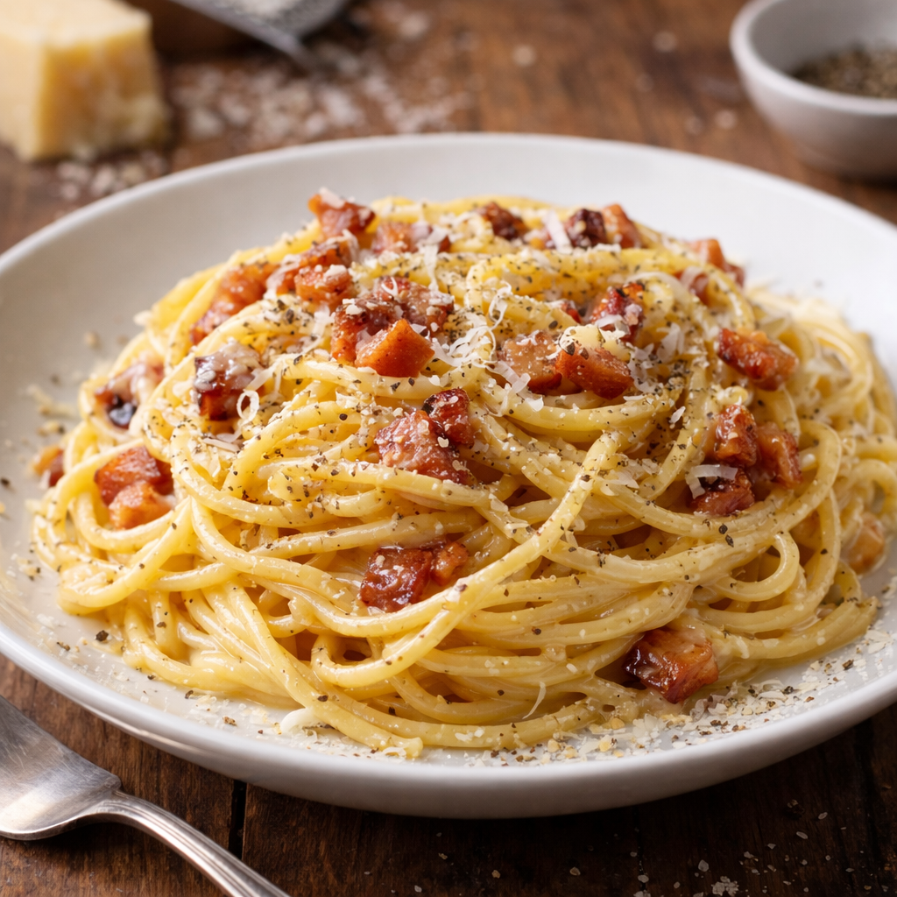

Spaghetti carbonara is a traditional Roman pasta dish known for its rich, creamy texture that comes from eggs and cheese rather than cream. The sauce is made by tossing hot pasta with eggs, grated Parmesan or Pecorino Romano cheese, crispy pancetta, and black pepper. The heat of the pasta gently cooks the eggs to create a smooth coating over each strand of spaghetti. Simple ingredients and careful timing produce a flavorful dish that feels both indulgent and comforting.